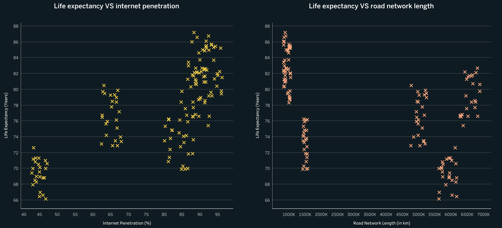

The Impact of Development on Life Expectancy
Context
As countries develop, various factors like healthcare access, urbanization, and modern infrastructure have profound impacts on the population's quality of life. One of the key indicators of development is life expectancy, but the relationship between development factors and life expectancy is not always straightforward.
How do key factors of development impact life expectancy?
The primary goal of this analysis is to understand which development factors most strongly influence life expectancy and whether modern features, like increased urbanization, are always beneficial to public health. We aim to provide insights that can inform development policies and improve population health outcomes.
We will use the Country Comparison Dataset from Kaggle, which includes data between 2000 and 2023 from six major countries: USA, Russia, Canada, China, India, and Australia.

This dataset contains key factors such as healthcare expenditure per capita, urbanization rates, GDP, doctor-to-patient ratios, and life expectancy.
Descriptive Statistics
Once the data was loaded and cleaned, we calculated descriptive statistics for key variables to identify basic trends in our data. Let’s calculate the average healthcare expenditure, life expectancy, and urbanization rates over 20 years (2000 to 2023) for each country.

From this table, we can see a clear relationship between life expectancy, healthcare expenditure, and urbanization rates. Australia has the highest life expectancy at 83 years, an urbanization rate of 86%, and on average, Australians spend about $5,000 per year per person on healthcare.
India and China have populations about four times that of the USA and 50 times that of Australia. India has the lowest life expectancy at 69 years, a low urbanization rate of 35%, and minimal healthcare expenditure of $73 per year per person.
China, with a comparable life expectancy of 77 years and a lower urbanization rate of 60%, has a healthcare expenditure of only $447 per inhabitant and yet, a much larger population of 1.4 billion.
Exploratory Data Analysis
Key aspects of development, as indicated by the Human Development Index (HDI), include access to healthcare, urbanization rates (which relate to agriculture), and access to modern amenities. Therefore, we will structure our analysis into three main sections:
- Healthcare access
- Urbanization rates
- Access to modern amenities
1. Healthcare Access
To begin, we will analyze the relationship between population size and healthcare access for the six countries. Previous statistics showed that countries with higher healthcare expenditure per capita experience better life expectancy. Additionally, countries with larger populations tend to allocate lower healthcare spending per person, which may indicate a strain on healthcare resources.
Let’s make a bar chart highlighting each country’s GDP and healthcare expenditure per capita.

This chart shows that countries with higher GDP also have higher healthcare expenditure per capita, which, as shown by previous statistics, correlates with higher life expectancy.
To further understand healthcare access, we’ll look at the distribution of doctors relative to population size. The following map illustrates the availability of doctors per capita across the six countries, offering a view of healthcare accessibility relative to population density.

The map reveals that in densely populated regions like India and China, there are fewer doctors available per capita.
To investigate whether education levels influence healthcare spending, we created a bar chart displaying literacy rates alongside healthcare expenditure per capita for each country.

The chart supports that countries with higher literacy rates invest more in healthcare. However, China stands out with a high literacy rate (96%) but relatively low healthcare expenditure per inhabitant ($447), indicating that other factors may also influence healthcare spending.
To confirm these interpretations, we can calculate the correlation coefficient which indicates how strongly two variables are related. The correlation coefficient for Literacy Rate and Healthcare Expenditure per Capita is 0.48 which doesn't indicate a very strong relationship.
2. Urbanization
Urbanization can have mixed effects on health outcomes. On one hand, urban areas often provide better access to healthcare and modern services; on the other, they may expose people to pollution and lifestyle-related health issues. Here, we will investigate how urbanization has evolved over the past two decades in each country and its potential impact on life expectancy.
To begin, let’s look at the evolution of urbanization rates in each country over the last 20 years.

From this graph, we can see that urbanization rates have not evolved much within the past 20 years for any of these countries. India has the lowest urbanization rate, which correlates with harder access to healthcare.
The graph indicates that urbanization rates have remained relatively stable across the six countries. India shows the lowest urbanization rate, which aligns with challenges in healthcare access. This could suggest that rural populations may face barriers to medical services and modern infrastructure.
Next, let’s examine the distribution of agricultural land to see how it might relate to urbanization and health outcomes.
The map shows that countries with higher life expectancies tend to have lower proportions of agricultural land. This may indicate that as urbanization increases, agricultural land use decreases, potentially affecting access to fresh, local food sources—a factor that could impact long-term health.
To confirm these interpretations, we can calculate the correlation coefficient which indicates how strongly two variables are related. The correlation coefficient for Urban Population and Life Expectancy is 0.77 which confirms a pretty strong positive relationship between urbanization rate and life expectancy.
3. Modern Features and Health
Modern features can improve healthcare access and communication but might also introduce health risks related to sedentary lifestyles and pollution. We will assess how access to modern infrastructure correlates with life expectancy.
Internet is part of the modern features of our century. Let’s analyze the relationship between internet penetration and life expectancy for the six countries.
Roads are also a modern facility. We’ll examine whether a country’s road network length has any connection to life expectancy, as infrastructure can influence healthcare access and quality of life.
Although there is no clear linear relationship, higher internet penetration seems to correlate with better life expectancy, suggesting that access to information and connectivity may contribute to improved health outcomes.
As for the roads, while no direct relationship appears, certain clusters show that extensive road networks can correlate with lower life expectancy, possibly tied to urban pollution or CO₂ emissions.
To assess environmental impact by country, let’s look at average CO₂ emissions per country.
China leads in CO₂ emissions, but its life expectancy is not the lowest. Similarly, the USA has high emissions while maintaining a higher life expectancy. In contrast, Canada and Australia have low emissions and high life expectancies, suggesting a potential correlation between lower emissions and better health outcomes.
Conclusion and Recommendations
This analysis highlights the key development factors that influence life expectancy, revealing both the benefits and unintended consequences of modernization. While higher healthcare expenditure generally correlates with improved health outcomes, the impact of urbanization and modern infrastructure presents a more nuanced picture. Countries experiencing rapid urbanization may face challenges such as pollution and lifestyle-related health issues, which can adversely affect life expectancy despite advancements in healthcare access.
In light of these findings, development policies could focus on:
- Promoting Sustainable Urbanization
- Focusing on Education and Awareness
- Investing in Rural Healthcare
- Monitoring and Evaluating Development Policies